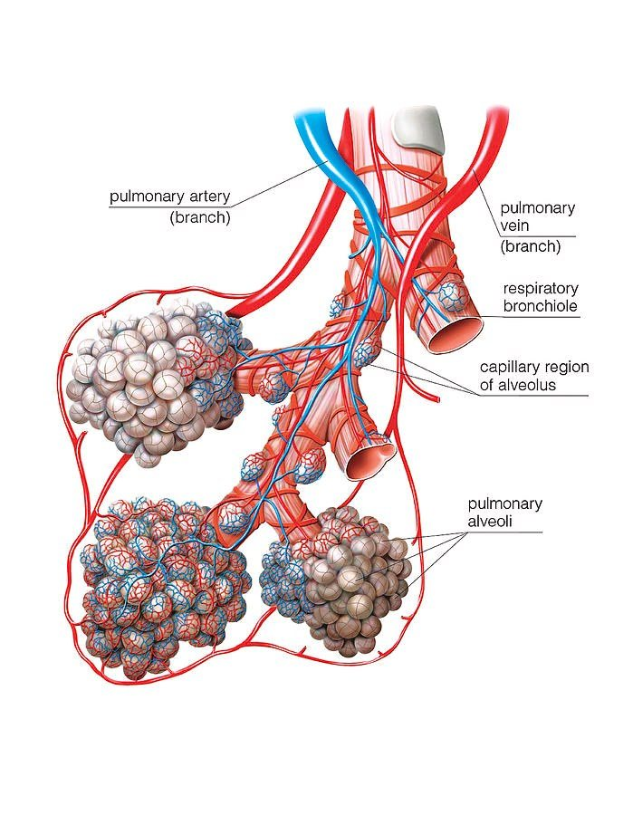
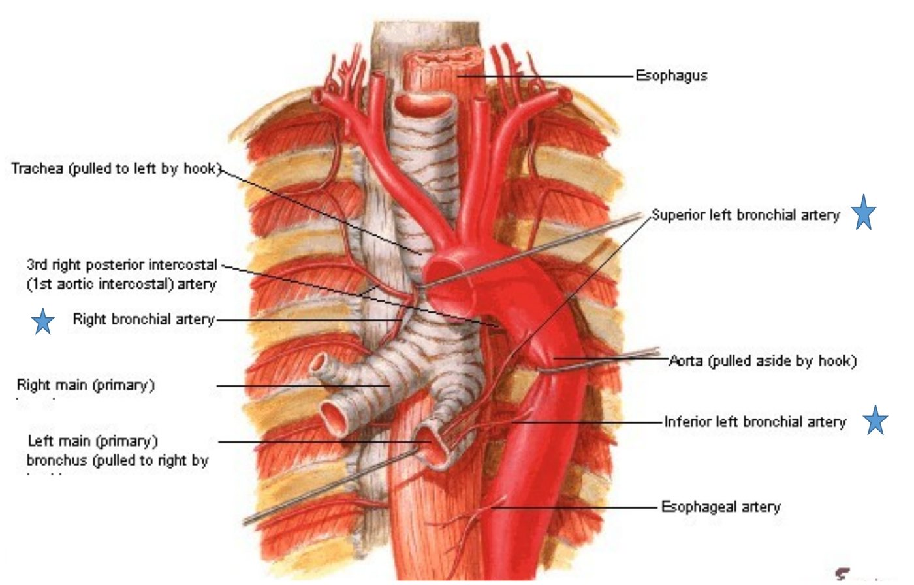
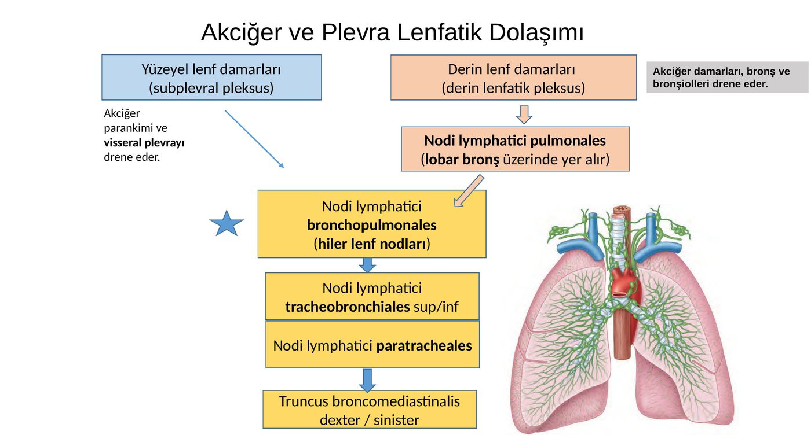
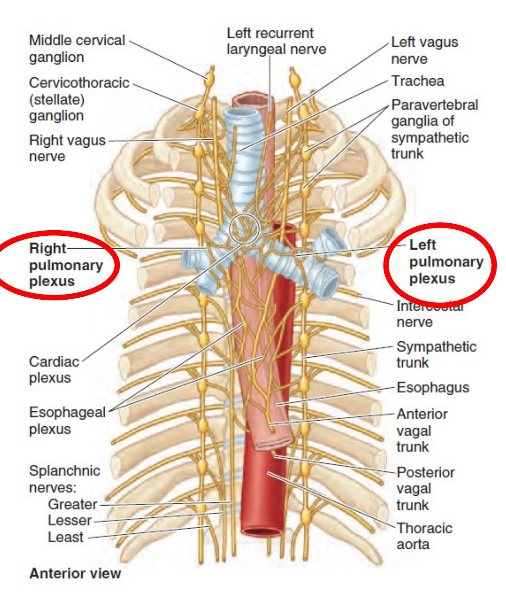
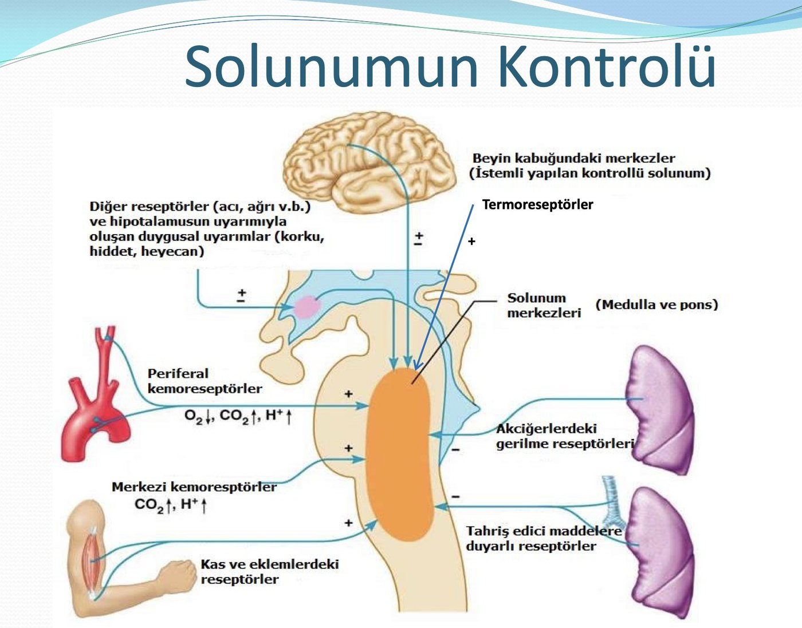

Bölüm 6 · Akciğer ve plevranın damarları, sinirleri
Akciğer, vücudun iki ayrı dolaşımdan kan alan birkaç organından biridir: biri bütün kalp debisini gaz değişimi için getirir, diğeri akciğerin kendi dokusunu besler. Bu bölüm bu iki dolaşımı, akciğerin lenf yollarını, hava yolunu daraltıp genişleten otonom sinirleri ve astım ilaçlarının bu sinirlerin hangi noktasına etki ettiğini, en sonunda da solunumu kendiliğinden sürdüren kontrol sistemini anlatır.
Sunum akciğerin damarlarını iki grupta toplar. Fonksiyonel damarlar her yanda bir pulmoner arter ve iki pulmoner vendir: sağ ventrikülden gelen oksijeni az kanı alveollere getirir, oksijenlenmiş kanı sol atriyuma götürürler. Besleyici damarlar ise bronşiyal arterlerdir: aortadan gelen oksijenli kanla bronşların, damarların ve destek dokusunun kendisini beslerler. İki dolaşım her açıdan farklıdır (Tablo 6.1).
| Pulmoner (fonksiyonel) dolaşım | Bronşiyal (besleyici) dolaşım | |
|---|---|---|
| Kaynak | Sağ ventrikül → truncus pulmonalis | Aorta thoracica (ve interkostal arterler) |
| Akım | Kalp debisinin tamamı (dinlenimde ~5 L/dk) | Kalp debisinin yaklaşık %1-2'si |
| Basınç | Düşük: ~25/10 mmHg (ortalama ~15) | Sistemik: ~120/80 mmHg |
| Taşıdığı kan | Oksijeni az (venöz) kan | Oksijenli (arteriyel) kan |
| Görevi | Gaz değişimi | Bronş ağacını (solunum bronşiollerine kadar), damar duvarlarını, kökteki yapıları, lenf düğümlerini ve visseral plevrayı beslemek |
| Hipoksiye yanıtı | Daralır (hipoksik pulmoner vazokonstriksiyon) | Genişler (sistemik arterler gibi) |
Tablo 6.1 — Akciğerin iki dolaşımı.
Truncus pulmonalis sağ ventrikülün çıkış kısmından (conus arteriosus) başlar. Yaklaşık 5 cm uzunluğunda ve 3 cm çapındadır. Önce aorta ascendens'in önünde, sonra solunda yukarı ve geriye doğru çıkar. Perikardın içindedir ve aorta ile ortak bir seröz kılıf paylaşır. Arcus aortae'nın içbükeyliğinin altında, angulus sterni düzleminin hemen altında (yaklaşık T5) ve orta hattın solunda ikiye ayrılır. Ayrılma yerini arcus aortae'nın alt yüzüne lig. arteriosum bağlar. Bu bağ, fetal dönemde pulmoner arterden aortaya kan geçiren ductus arteriosus'un kalıntısıdır. Sol n. laryngeus recurrens arcus aortae'nın altında, bu bağın hemen lateralinde kanca yaparak yukarı döner (Bölüm 7.3).
Sunumun iki yıldızla vurguladığı cümle intrapulmoner dallanmayı anlatır: her arter ana bronşun arka-yanına iner, lob ve segment dallarına ayrılır; bronşla aynı anda dallanır ve paralel doğrultuda seyreder. Bronş ve ona eşlik eden arter, akciğerin derinliklerine kadar bir "bronkovasküler demet" olarak birlikte ilerler. Sağlıklı akciğerde bir bronş ile eşlik eden arterin çapı birbirine yakındır. Bilgisayarlı tomografide bronşun eşlik eden arterden belirgin genişlemesi ("taşlı yüzük" görünümü) bronşektazinin tanı ölçütüdür (Kitap 3). Pulmoner arterin dallanma noktaları emboliler için tuzaktır: truncus pulmonalis'in ikiye ayrıldığı yere oturan büyük bir pıhtı (eyer embolisi) iki akciğerin dolaşımını birden keser. Pulmoner hipertansiyonda pulmoner arter ve dalları genişler (Kitap 5).

Her akciğerden iki pulmoner ven (superior ve inferior) çıkar ve dört ven sol atriyuma açılır. Sağ üst pulmoner ven üst ve orta lobun, sol üst pulmoner ven lingula dahil üst lobun kanını toplar. Alt venler alt lobları drene eder. Varyasyonlar sıktır: sağ orta lobun ayrı bir veni olabilir, iki sol ven atriyuma açılmadan önce ortak bir gövdede birleşebilir.
Sunumun üç cümlesi venlerin akciğer içindeki düzenini özetler:
Hilusta venler en önde ve en aşağıdadır. Alt pulmoner ven lig. pulmonale'nin üst ucundadır ve lobektomide cerrah bu bağı keserek alt vene ulaşır. Pulmoner venlerin sol atriyuma açıldığı yerde duvarlarında birkaç santimetre boyunca kalp kası uzanır. Bu kas kılıflarından kaynaklanan elektriksel uyarılar atriyal fibrilasyonun en sık başlangıç noktasıdır; kateter ablasyonunda bu venler atriyumdan elektriksel olarak yalıtılır.
Sunuma göre bronşiyal arterler (besleyici) radix pulmonis'teki yapıları, akciğerin destek dokusunu ve visseral plevrayı besler. Özellikleri:

İki dolaşım nerede buluşur? Bronşiyal arterlerin dağıldığı en uç nokta solunum bronşiolleridir. Burada bronşiyal kapillerler pulmoner kapillerler ve venlerle anastomoz yapar. Bronşiyal dolaşımın venöz kanının yalnızca bir kısmı (kökteki ve büyük bronşlardaki kısım) bronşiyal venlerle azygos sistemine döner. Geri kalanı, yani küçük hava yollarını besleyip oksijenini bırakmış kan, doğrudan pulmoner venlere boşalır. Bunun bir fizyolojik sonucu vardır: oksijenlenmiş kanın sol atriyuma dönen kısmına bir miktar oksijeni az kan karışır. Kalbin kendi küçük venlerinin (Thebesius venleri) sol boşluklara açılmasıyla birlikte bu "anatomik şant" kalp debisinin yaklaşık %2'sidir. Sağlıklı bir insanda bile arteriyel PO₂'nin alveol PO₂'sinden birkaç milimetre cıva düşük olmasının (normal alveol-arter farkı) bir nedeni budur.
Klinik bağlantılar.
Sunum akciğerin lenf drenajını hocanın kendi hazırladığı bir akış şemasıyla verir (Şekil 6.3). İki lenf ağı vardır:

İki ağın lenfi hilusta nodi bronchopulmonales'de (hiler düğümler) buluşur. Buradan sırasıyla nodi tracheobronchiales superiores (trakea ile ana bronşun yaptığı açıda) ve inferiores (karina altı), nodi paratracheales ve truncus bronchomediastinalis'e geçer. Sağ gövde ductus lymphaticus dexter'e, sol gövde ductus thoracicus'a ya da doğrudan boyun kökündeki venöz açıya (v. jugularis interna ile v. subclavia'nın birleştiği yer) açılır.
Akciğerin lenf sisteminin üç önemli özelliği vardır. (1) Alveollerin lenfatiği yoktur. Lenf kapillerleri terminal bronşioller düzeyinde ve lobülleri ayıran septumlarda başlar. Alveol duvarında biriken fazla sıvı interstisyum boyunca bu lenfatiklere ulaşmak zorundadır. Kalp yetersizliğinde önce interstisyel ödem (septumların kalınlaşması, Kerley çizgileri), lenfatiklerin kapasitesi aşılınca alveoler ödem gelişmesi bu yüzdendir. (2) Sol alt lobdan sağa geçiş vardır (Şekil 6.4). (3) Solunan karbon parçacıkları makrofajlarla lenf düğümlerine taşınır. Hiler ve mediastinal düğümler yetişkinde bu yüzden siyahtır (antrakoz).
Plevranın lenfi (slayt 67) iki yaprağın farklı kökenini bir kez daha yansıtır. Parietal plevranın lenfi göğüs duvarının lenf düğümlerine (interkostal, parasternal, mediastinal ve frenik düğümler) drene olur. Servikal parietal plevranın drenajında bazı lenf damarları aksiller lenf düğümlerine gider. Visseral plevranın lenfi ise yüzeyel lenf damarlarıyla subplevral pleksusa, oradan hiler düğümlere drene olur.
Lenf düğümü istasyonları. Akciğer kanserinin evrelemesinde göğüs içi lenf düğümleri numaralı istasyonlarla adlandırılır (Tablo 6.2). Evre, tümörün hangi istasyona ulaştığına göre belirlenir: aynı taraftaki akciğer içi ve hiler düğümler (10-14) N1, aynı taraftaki mediastinal ve karina altı düğümler (2-9) N2, karşı taraf mediastinal ya da hiler düğümler ve supraklaviküler düğümler N3 sayılır. Sunumdaki anatomik zincir bu istasyonların ardışık dizilişinin ta kendisidir.
| İstasyon | Anatomik karşılığı |
|---|---|
| 1 | Alt servikal, supraklaviküler ve suprasternal düğümler |
| 2R / 2L, 4R / 4L | Üst ve alt paratrakeal düğümler (nodi paratracheales) |
| 3a / 3p | Prevasküler (büyük damarların önü) / retrotrakeal düğümler |
| 5 ve 6 | Subaortik (aortopulmoner pencere) ve paraaortik düğümler |
| 7 | Karina altı düğümler (nodi tracheobronchiales inferiores) |
| 8 ve 9 | Paraözofageal düğümler; lig. pulmonale düğümleri |
| 10 | Hiler düğümler (nodi bronchopulmonales) |
| 11-14 | İnterlober, lober, segmenter ve subsegmenter düğümler (nodi pulmonales) |
Tablo 6.2 — Akciğer kanseri evrelemesinde kullanılan göğüs içi lenf düğümü istasyonları (IASLC haritası, özet).
Sunuma göre akciğerin ve visseral plevranın sinirleri, akciğer kökünün önünde ve arkasında yer alan ön ve arka plexus pulmonalis'ten gelir (Şekil 6.5). Parasempatik lifler n. vagus'tan, sempatik lifler truncus sympathicus'tan (T2-T4) gelir. Pleksus yukarıda kalp pleksusuyla, aşağıda özofagus pleksusuyla devamlıdır.

Eferent (motor ve salgı) etkiler. Sunum iki sistemin etkilerini üç hedefte karşılaştırır:
| Hedef | Parasempatik (n. vagus) | Sempatik (truncus sympathicus, T2-T4) |
|---|---|---|
| Bronş ağacının düz kası | Motor: bronkokonstriktör | İnhibitör: bronkodilatatör |
| Pulmoner damarlar | İnhibitör: vazodilatatör | Motor: vazokonstriktör |
| Bezler | Sekretomotor (salgıyı artırır) | İnhibitör |
Tablo 6.3 — Akciğerin otonom innervasyonunun etkileri (slayt 68). Sunumda sempatik etkiler sarıyla vurgulanmıştır.
Tablodaki dikkat edilmesi gereken nokta, aynı sinir sisteminin bronşta ve damarda zıt etki yapmasıdır: parasempatik sistem bronşu daraltır ama pulmoner damarı genişletir; sempatik sistem bronşu genişletir ama pulmoner damarı daraltır. Sınavda "parasempatik lifler pulmoner damarlarda vazokonstriksiyon yapar" ya da "sempatik lifler bezlerde salgıyı artırır" gibi yer değiştirilmiş ifadeler çeldirici olarak kullanılabilir.
İlaçlar sinirin hangi noktasına etki eder? Sunum bu tabloyu iki astım ilacı grubuna bağlar: β₂ mimetikler (salbutamol, formoterol) ve antikolinerjikler (ipratropium). Şekil 6.6 iki yolu ve ilaçların etki noktalarını adım adım gösterir:
Bu iki yolun ağırlığı insan akciğerinde eşit değildir. Hava yolunun dinlenim tonusunu belirleyen asıl sinir vagustur: sağlıklı insanda bile vagus bronşları hafifçe daraltır ve bu tonus gece artar. Sempatik sinir uçları ise hava yolu düz kasına pek ulaşmaz. Düz kastaki β₂ reseptörlerini daha çok böbrek üstü bezinden salınan dolaşımdaki adrenalin uyarır. Bu yüzden β₂ agonist ilaç, sinirlerin zaten taşıdığı bir mesajı güçlendirmekten çok, dolaşımdaki adrenalinin etkisini taklit eder. Ayrıca adrenerjik ve kolinerjik olmayan bir inhibitör sistem (nitrik oksit ve vazoaktif intestinal peptit ile çalışan lifler) de bronş gevşemesine katkıda bulunur.
Visseral afferent lifler. Sunuma göre pulmoner pleksusların visseral afferent lifleri ya refleksif ya da nosiseptiftir:
Parietal plevranın sinirleri (slayt 71) ise somatiktir ve interkostal sinirlerden ve n. phrenicus'tan gelir. Kostal plevra ve diyafram plevrasının periferik kısmı interkostal sinirlerle innerve edilir ve dokunma ile ağrı hissini taşır (sunumda kırmızıyla vurgulanmıştır). Diyafram plevrasının merkezi kısmı ve mediastinal plevra n. phrenicus ile innerve edilir. Bu dağılımın klinik sonucu, plevra ağrısının nereye yansıyacağıdır:
Slayt 68'de sarıyla vurgulanan cümle: "Sempatik lifler bronşiyal ağaç düz kaslarında inhibitör (bronkodilatatör), pulmoner damarlarda motor (vazokonstriktör) ve bronşiyal ağacın alveoler bezlerinde inhibitör karakterdedir." Slayt 71'de kırmızıyla vurgulanan: parietal plevranın interkostal sinirlerle innerve edilen kısımları "dokunma ve ağrı hissini taşır."
Sunum konuyu iki slaytla kapatır. Normal solunum otomatik olarak devam eder. Solunum merkezleri reseptörlerden gelen duyusal uyarılarla (gerilme reseptörleri, basınç reseptörleri, kemoreseptörler) etkinleşir ve reseptörlerden alınan duyusal uyarılarla solunumun şekli değişir. Şekil 6.7 sistemin bütününü gösterir.

Merkezler. Solunumun ritmi beyin sapında üretilir. Medullanın dorsal solunum grubu (nucleus tractus solitarii çevresi) asıl inspiratuvar nöronları içerir ve n. vagus ile n. glossopharyngeus'tan gelen duyusal bilgiyi alır. Ventral solunum grubunda ritmin üretildiği nöron topluluğu (pre-Bötzinger kompleksi) ve zorlu solunumda devreye giren inspiratuvar ve ekspiratuvar nöronlar bulunur. Ponstaki merkezler (pnömotaksik merkez) inspirasyonun süresini sınırlayarak solunumun hızını ve ritminin düzgünlüğünü ayarlar. Beyin kabuğu ise beyin sapını atlayarak solunumu istemli olarak değiştirebilir: konuşma, şarkı söyleme, nefes tutma. Duygular (korku, öfke, heyecan) hipotalamus ve limbik sistem üzerinden solunumu hızlandırır.
Reseptörler ve neden CO₂ asıl uyarandır? Solunumu dakikadan dakikaya ayarlayan en güçlü uyaran kandaki CO₂'dir ve onu merkezi kemoreseptörler algılar. Bu reseptörler medullanın ön yüzündedir ve aslında CO₂'yi değil, beyin omurilik sıvısındaki H⁺ yoğunluğunu ölçer. Zincir şöyle işler: (1) kanda CO₂ artar; (2) CO₂ kan-beyin bariyerini kolayca geçer (H⁺ iyonu ise geçemez); (3) beyin omurilik sıvısında CO₂ suyla birleşip karbonik asit oluşturur ve H⁺ açığa çıkar; (4) beyin omurilik sıvısında protein az olduğu için bu H⁺ tamponlanamaz ve pH belirgin düşer; (5) reseptörler uyarılır, solunum derinleşip hızlanır; (6) fazla CO₂ atılır ve döngü kapanır. Periferik kemoreseptörler (a. carotis communis'in çatallanma yerindeki glomus caroticum ve arcus aortae'daki glomera aortica) ise asıl olarak arteriyel O₂ düşüşünü algılar. Yanıtları PaO₂ yaklaşık 60 mmHg'nin altına inince belirginleşir. Karotis cisimciğinin bilgisini n. glossopharyngeus, aortik cisimciklerinkini n. vagus taşır. Akciğerdeki gerilme, irritan ve J reseptörleri (6.6), kas ve eklemlerdeki proprioseptörler (egzersizin başında solunumun kan gazları değişmeden artması) ve termoreseptörler de merkezlere bilgi gönderir.
Çıkış yolları. Merkezlerin komutu omurilik yoluyla solunum kaslarına ulaşır: diyaframa n. phrenicus (C3-C5), interkostal kaslara nn. intercostales (T1-T11), yardımcı kaslara servikal sinirler ve n. accessorius. Yüksek servikal omurilik yaralanmalarının neden solunumu durdurduğu (Bölüm 2.6) bu yolla açıklanır.
Klinik bağlantı: KOAH'ta oksijen. Kronik hiperkapnik KOAH hastasında kandaki CO₂ uzun süre yüksek kaldığı için böbrekler bikarbonatı artırır ve beyin omurilik sıvısının pH'sı normale döner. Merkezi kemoreseptörlerin CO₂'ye yanıtı azalır. Bu hastalarda düşük oksijenin periferik kemoreseptörler üzerinden yarattığı uyarının göreli önemi artar. Kontrolsüz yüksek akımlı oksijen CO₂'yi daha da yükseltebilir. Bunun asıl nedeni V/Q dengesinin bozulmasıdır (hipoksik vazokonstriksiyonun kalkması), ama hipoksik uyarının azalması ve Haldane etkisi de katkıda bulunur. Bu yüzden bu hastalarda oksijen düşük akımla (1-2 L/dk) ve hedef satürasyon %88-92 olacak şekilde verilir (Kitap 1 ve 5). Opioidler ve sedatifler medulladaki merkezleri baskıladığı için solunum depresyonu yapar.
Doğru: B. Sunumun sarıyla vurguladığı cümleye göre sempatik lifler bronş ağacının düz kaslarında inhibitördür (bronkodilatatör), pulmoner damarlarda motordur (vazokonstriktör) ve bezlerde inhibitördür.
A ve E parasempatik etkilerin bir kısmını sempatiğe yakıştırır: bronkokonstriksiyon, pulmoner vazodilatasyon ve salgı artışı n. vagus'un etkileridir. C'nin ikinci yarısı yanlıştır: salgıyı artıran parasempatik sistemdir. D'nin ilk yarısı yanlıştır: sempatik sistem bronşu genişletir.
Doğru: A. N. vagus'un postganglionik lifleri asetilkolin salar. Asetilkolin bronş düz kasındaki M₃ reseptörüne bağlanır, Gq-fosfolipaz C-IP₃ yoluyla hücre içi kalsiyumu artırır ve kası kastırır. Bu reseptör inhibe edildiğinde (ipratropium, tiotropium) vagal tonus ortadan kalkar ve düz kas gevşer.
B yanlış: M₂ reseptörü sinir ucundaki bir otoreseptördür ve asetilkolin salınımını frenler; onun inhibe edilmesi asetilkolin salınımını artırır, gevşeme yapmaz. C yanlış: β₁ reseptörleri kalptedir. D yanlış: β₂ reseptörü bronşu gevşetmek için inhibe değil uyarılır (salbutamol, formoterol). E yanlış: α₁ reseptörleri damar düz kasında kasılma yapar; bronş gevşemesinde yeri yoktur.
Doğru: B. β₂ reseptörü Gs proteinini uyarır, adenilil siklaz etkinleşir, cAMP artar ve protein kinaz A etkinleşir. Protein kinaz A, sitoplazmadaki kalsiyumun sarkoplazmik retikuluma geri pompalanmasını ve hücre dışına atılmasını artırır, miyozin hafif zincir kinazını baskılar. Sitoplazmik kalsiyum azalınca düz kas gevşer.
A yanlış: β₂ uyarısı potasyum kanallarını açarak potasyum çıkışını artırır ve hücreyi hiperpolarize eder; ayrıca hücre dışı potasyumu hücre içine sokarak hipokalemi yapar. C yanlış: hücre içine kalsiyum girişi kasılma yapar. D yanlış: β₂ reseptörü Gs'yi uyarır, inhibe etmez. E yanlış: cAMP azalmaz, artar.
Doğru (yanlış ifade): D. Gaz değişimine katılacak kanı alveollere pulmoner arterler getirir (fonksiyonel damarlar). Bronşiyal arterler besleyici damarlardır ve aortadan gelen oksijenli kanla bronş ağacını, kökteki yapıları, destek dokusunu ve visseral plevrayı besler.
A, B, C ve E sunumun bronşiyal arter tanımıdır. Sağ bronşiyal arter bir interkostal arterden, aortadan ya da sol üst bronşiyal arterden çıkabilir.
Doğru: C. Sunumun iki yıldızla vurguladığı gibi her pulmoner arter ana bronşun arka-yanına iner, lob ve segment dallarına ayrılır, bronşla aynı anda dallanır ve paralel doğrultuda seyreder (bronkovasküler demet).
A yanlış: sağ pulmoner arter daha uzundur, çünkü ayrılma yeri orta hattın solundadır ve sağ arter orta hattı geçmek zorundadır. B yanlış: venler bronş ve arterlerden bağımsızdır, segmentler arasında ilerler. D yanlış: parietal plevranın venleri sistemik venlere, visseral plevranınki pulmoner venlere drene olur. E yanlış: her akciğerden iki (üst ve alt) pulmoner ven çıkar; sol atriyuma dört ven açılır.
Doğru (yanlış ifade): D. Alveol duvarlarında lenf kapilleri yoktur. Lenfatikler terminal bronşioller düzeyinde ve interlobüler septumlarda başlar. Alveol duvarında biriken sıvı önce interstisyumda bu lenfatiklere doğru ilerler; kalp yetersizliğinde interstisyel ödemin alveoler ödemden önce gelmesi bu yüzdendir.
A ve B sunumun iki pleksus tanımıdır. C doğrudur: hiler (bronkopulmoner) düğümler iki ağın buluştuğu ilk ortak istasyondur ve sunumda yıldızla vurgulanmıştır. E doğrudur: karina altı düğümlerin lenfi çoğunlukla sağ paratrakeal düğümlere geçer; sol alt lob tümörlerinin karşı tarafa yayılabilmesi bundandır.
Doğru: E. Sunuma göre visseral plevra ve bronşlardan kalkan nosiseptif lifler sempatik liflere eşlik eder ve truncus sympathicus üzerinden üst torakal spinal sinirlerin duyusal (arka kök) gangliyonlarına ulaşır.
A yanlış: vagus yoluyla giden ağrı lifleri trakeadan gelenlerdir; refleksif afferentler de (öksürük, Hering-Breuer) vagusla taşınır. B yanlış: n. phrenicus mediastinal ve diyafram merkezindeki parietal plevranın duyusunu taşır, visseral plevranınkini değil. C yanlış: interkostal sinirler kostal parietal plevranın duyusunu taşır; duyu lifleri ön boynuza değil arka boynuza girer. D yanlış: n. glossopharyngeus karotis cisimciğinin kemoreseptör bilgisini taşır.
Doğru: A. Diyafram plevrasının merkezi kısmının duyusunu n. phrenicus (C3-C5) taşır. Bu segmentler omuz başının derisini de (nn. supraclaviculares, C3-C4) innerve ettiği için ağrı omuz başına yansır.
B yanlış: meme başı T4 dermatomudur; kostal plevranın o hizadaki tutulumu orada ağrı yapar. C yanlış: göbek T10 dermatomudur; diyafram plevrasının periferik kısmı (alt interkostal sinirler) karın duvarına ağrı yansıtabilir, merkezi kısmı değil. D yanlış: kolun iç yüzü T1-T2'dir; kalp ağrısının yansıdığı yerdir. E yanlış: kasık L1 dermatomudur.
Doğru: E. Merkezi kemoreseptörler medullanın ön yüzündedir ve beyin omurilik sıvısının H⁺ yoğunluğunu ölçer. Kandaki CO₂ kan-beyin bariyerini kolayca geçer, beyin omurilik sıvısında karbonik aside dönüşür ve açığa çıkan H⁺ az tamponlandığı için pH'yı belirgin düşürür. Bu yüzden CO₂ solunumun en güçlü dakikalık düzenleyicisidir.
A yanlış: O₂ düşüşünü periferik kemoreseptörler (karotis ve aortik cisimcikler) algılar. B yanlış: H⁺ iyonu kan-beyin bariyerini kolayca geçemez; merkezi reseptörleri uyaran, bariyeri geçen CO₂'nin beyin omurilik sıvısında oluşturduğu H⁺'dır. C yanlış: akciğerin gerilmesini vagal gerilme reseptörleri algılar (Hering-Breuer). D yanlış: kas ve eklem reseptörleri egzersizde solunumu artırır, ama kemoreseptör değildir.